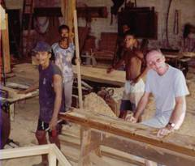

Mission AFDI à MADAGASCAR
Madagascar retient mon attention depuis longtemps, car j'y ai fait mon service militaire en 1954. Aussi, c'est tout naturellement que j'ai accepté d'accompagner Jean Boucard dans le cadre de l'AFDI, -Association Française de Développement International ou Paysans Sans Frontière (PSF), quand il s'est agi d'aider les malgaches à organiser leur association d'usagers de l'eau pour produire du riz irrigué à partir du canal du Dabara construit par la France, au milieu du siècle, dans la région de Morondava, au sud-ouest de Madagascar.
En 45 ans, la population a triplé, avec cependant une densité assez faible de 20 habitants au km2 et un bon potentiel agricole, mais les conditions de vie n'ont pas évolué. 80 % de la population vivent de l'agriculture. Même si la pauvreté est générale, ce n'est pas la misère.
Les adultes, les enfants sont bien nourris et respirent la santé. Par contre, les plus de 65 ans sont très rares, alors que l'on voit partout des multitudes de gosses. La scolarisation est généralisée par des écoles dans presque tous les villages. 
Tout le travail est réalisé à force d'hommes et un peu par les zébus que l'on peut qualifier de 4x4 malgaches. Ils tirent la herse dans la rizière, ils trottent et même galopent lorsqu'ils sont attelés à la carriole transportant toute la famille. Rien à voir avec nos bœufs de labour à la démarche pesante et lente.
Les prix du riz, du lait, des volailles, des œufs sont proches des nôtres, mais le coût de la main d'œuvre est dérisoire, de l'ordre de 1 franc de l'heure, sans charges sociales et sans assurance pour le salarié.
Un litre de lait rémunère 3 heures de travail alors que chez nous il faut plutôt 30 litres de lait pour payer une heure de travail.
La productivité est très faible. Les paysans que nous avons visités produisent 4 à 5000 kg de riz et doivent en réserver la moitié, voire plus si la famille est nombreuse, pour la consommation familiale.
Les paysans malgaches se trouvent, à peu près, dans la même situation que nos anciens avant 1900.
Même en 1948, lorsque j'ai pris mon orientation professionnelle, tout nous passait par les bras, les bœufs ou les chevaux assuraient seulement la traction et les cartes de pain étaient encore en vigueur.
La mécanisation est venue progressivement suivie par des gains de productivité très importants. Le développement de l'agriculture a permis le progrès social. Chaque actif libéré de la fonction agricole nourricière fut disponible pour d'autres fonctions de culture, confort, loisirs ou de santé.
Et les jachères sont arrivées avant ma retraite!
Aujourd'hui nos agriculteurs travaillent avec l'informatique embarquée sur le tracteur ou la moiss-batt et dans l'industrie les machines-outils fabriquent les robots qui équipent les chaînes de montage automatisées!
En 1947, le plan Marshall, comme au Monopoly, nous a donné des cartes pour jouer avec les Américains et la partie s'est avérée intéressante pour tous les partenaires.
Il faudra bien faire quelque chose de semblable avec ces pays si nous ne voulons pas nous priver- et les priver- plus longtemps du travail qu'ils pourraient fournir et de leur consommation qui ferait marcher le commerce.
Le retard de Madagascar est très important mais pourrait être rattrapé en brûlant quelques étapes. Il n'y a ni électricité, ni téléphone, ni distribution de courrier dans les villages souvent fort distants les uns des autres. Souvenons- nous des 20 habitants au km2.
En effet, les groupes électrogènes privés, le téléphone portable, Internet et le Fax se développeront sur initiatives personnelles sans attendre les décisions de Tananarive ni l'implantation de lignes électriques ou téléphoniques qui demanderaient des investissements publics et des délais considérables dans un pays sans ressources.
du 25 janvier au 7 février 2002.
Avec mon épouse et huit personnes de l'INRA, nous avons effectué ce voyage axé sur la ruralité et l'agriculture et j'établis ce compte-rendu à titre tout à fait personnel.
L'agriculture occupe 85% de la population togolaise active.
Deux explications pour mieux comprendre cette économie de subsistance:
1) le travail de la terre est totalement manuel. La culture attelée est inconnue tout comme l'utilisation de la roue: pas de charriot, pas de brouette, tout est porté sur la tête par les femmes. Il y a bien sûr quelques motos, quelques voitures et quelques camions sur les routes, mais ils n'interviennent pas dans la production de la nourriture.
2) les enfants de moins de 15 ans représentent 46 % de la population.
C'est la pauvreté généralisée, mais ce n'est pas la misère. Les enfants sont bien nourris. J'ai ressenti une trés grande dignité et j'ai été impressionné par la franchise des regards.
L'économie du Togo est complètement en panne et je constate, comme à Madagascar, le manque d'argent pour amorcer la pompe des échanges. Ce ne sont pas les producteurs qui manquent mais les acheteurs.
Les marchés sont pleins de marchandises qui ne trouvent pas toujours preneurs. Si la paysanne n'a pas vendu ses bananes, son igname ou son manioc, elle ne peut pas acheter le tissu ou les comprimés contre le paludisme dont sa famille a besoin.
Les sols de latérites sont pauvres en éléments fins et l'absence de mécanisation encourage l'écobuage pour travailler plus facilement la terre à la main.
Malheureusement, les débris végétaux qui pourraient apporter de la matière organique recyclable au sol sont partis en fumée.
Le CIDAP de BAGA -centre international de développement agropastoral- qui nous a accueilli travaille la population en profondeur pour lui inculquer les bases pour régénérer les sols et les rendre plus productifs sans apports d'intrants que de toutes façons les paysans n'ont pas les moyens d'acheter.
Le CIDAP est géré par ses créateurs, un couple d'universitaires togolais qui a fait ses études en France, et qui sont revenus se mettre au service de leur pays pour aider les gens à mieux tirer parti de leurs sols.
Avec des crédits d'aide internationale, ils emploient plusieurs centaines de femmes, une journée par semaine et les enfants pendant les vacances, pour leur apprendre à améliorer la fertilité des sols, à diversifier les productions et à initier la culture attelée avec des boeufs.
La reflexion engagée au CIDAP a amené la création d'une école primaire de 150 élèves dont les enseignants sont bénévoles- ils reçoivent seulement un coup de main des villageois pour cultiver leur lopin de terre afin de pouvoir manger comme eux !
Il a aussi été créé un Centre de Santé pour assurer les accouchements et les soins aux malades et accidentés mais sans possibilités d'interventions chirurgicales. Une quinzaine de personnes- dont aucune n'est médecin- travaillent dans ce centre au service d'une population de 7 à 8.000 habitants.
Les médicaments que nous avons apportés ont permis de multiplier le stock par trois.
Le CIDAP a aussi créé une mutuelles des femmes et lors de l'Assemblée Générale nous avons constaté la dramatique quasi-absence d'argent. Celles qui peuvent épargner l'équivalent de deux euros par an sont rares.
Sans argent, la mére de famille togolaise- dans son village, avec son champ- peut nourrir sa famille, mais ne peut pas soigner l'enfant malade. Un enfant sur cinq n'atteint pas l'âge de cinq ans.
Bien entendu, il n'y a aucune couverture sociale.
Les efforts portent essentiellement sur la scolarisation des enfants qui sont désireux d'apprendre et qui sont conscients de leur chance, car un tiers d'entr'eux, voire plus, n'est pas scolarisé parce que les parents n'ont pas les moyens de payer l'équivalent de deux euros par enfant et par an ou parce qu'ils habitent trop loin de l'école.
Quand on parle d'aide financière aux pays comme le Togo, bien peu d'argent arrive sur place pour irriguer l'économie. Prenons un exemple : des municipalités décident de faire cadeau de leur mobilier de classe réformé aux enfants du tiers monde et prennent en charge l'acheminement en conteneur.
Noble intention, mais aucune retombée économique arrive sur le pays ciblé, car le transporteur est européen et l'argent restera en Europe. Pour le même budget, achetons les tables neuves sur place, nous en avons vu de trés belles, à moins de 50 euros pièce à Kara, et elles donneront du travail au Togo à des artisans qui achèteront les produits locaux. Et les enfants togolais se construiront sur du neuf et non sur nos reliques.
Les mères de familles ou les politiques togolais se posent vraisemblablement la même question: "Que vais-je pouvoir vendre à mes voisins pour éduquer mes enfants et les préparer à trouver leur place dans le 21 ème siècle" ?
Ceci dit, le TOGO n'a pas pas tous les malheurs du monde : je n'y ai vu, avec mon oeil de paysan, ni chardons, ni orties, ni taupes !
Plus sérieusement, c'est un pays magnifique sous climal équatorial avec des arbres gigantesques au Sud, passant à la savane arborée en remontant vers le Burkina-Faso, ex Haute-Volta, à 600km au Nord.
Le Togo constitue une bande étirée entre le Bénin, ex-Dahomey, à l'Est, et le Ghana à l'Ouest. Sa surface est d'environ le dixième de la France et sa population de 4,6 millions d'habitants.
Les saisons sont trés marquées. La saison des pluies assure la production de nourriture et la beauté des paysages. La saison séche de décembre à juin permettra aux "Tour-Opérators" de garantir aux touristes le beau-temps pendant cette période, ce qui n'est pas le cas partout.
Nous avons dîné tous les soirs à l'extérieur et nous avons été surpris par l'absence d'insectes pendant notre séjour. Et aussi par l'absence d'oiseaux, à part quelques tourterelles qui se nourrissent de graines.
Les togolais sont d'une gentillesse extraordinaire et leurs relations avec les français n'est pas entachée par le passé colonial. Ce sont les allemands qui ont occupé le Togo à la fin du XIX ème siècle et imposé la présence occidentale. L'Allemagne a perdu le Togo en 1917 au profit de la France. Et les français sont alors apparus beaucoup moins sévéres pour la population et ont été mieux tolérés par la suite.
La route principale est en bon état, l'adduction d'eau existe même si elle n'est pas généralisée et limitée à un robinet public, sous surveillance, pour encaisser le paiement à chaque cuvette.
A condition de ne pas faire n'importe quoi, le tourisme peut être une solution pour apporter de l'argent et du travail à une population qui en a tant besoin.
Madame, Mademoiselle, Monsieur,

Si vous souhaitez correspondre avec des malgaches, je peux vous recommander d'entrer en contact avec le Frère CELCE à Morondava sur la côte ouest de Madagascar.
Aujourd'hui, âgé de 82 ans, il sent qu'il ne pourra pas aider assez longtemps ses filleuls dans leurs études. Arrivé en 1949 par bateau à Madagascar, il a toujours oeuvré pour le peuple malgache et dirige toujours un atelier de menuiserie avec 4 ouvriers pour fabriquer du matériel scolaire. Ses seuls loisirs sont- ou plutôt étaient- la chasse au sanglier. Il est régulièrement appelé pour éliminer les caïmans mangeurs d'hommes qu'il faut absolument détruire, comme lors de ma dernière visite en octobre 2002, quand un jeune homme de 21 ans venait de se faire dévorer.
Hébergé à la mission catholique de Morondava, ses faibles ressources lui permettaient de soutenir les études primaires et secondaires sur place. Une de ses filleules, brillante élève, entreprend des études supérieures à Tananarive, et il redoute de ne pas avoir les ressources et surtout le temps pour l'accompagner.
J'ai eu le plaisir de rencontrer à trois reprises Frère Celce et je puis vous assurer que c'est un saint homme à qui nous pouvons faire confiance.
Les malgaches sont gentils, accueillants et travailleurs, mais l'heure de travail est rémunérée en franc français, aussi une aide de quelques dizaines d'euros peut apporter beaucoup sur place.
 Un courrier au Frère CELCE, Mission Catholique, BP 27 à Morondava 619 Madagascar, éventuellement accompagné d'un petit chèque vous permettra de prendre contact et d'apprécier quelle suite à donner et décider si vous souhaitez vous adresser soit à un enfant directement soit au Frère Celce.
Ce circuit court vous permet d'être assuré que l'argent que vous envoyez sera totalement utilisé pour un objectif humanitaire et vous permettra de correspondre avec des gens dont le bon-sens et la fraîcheur vous surprendront.
Cordialement,
André Menet, militant à AFDI (Agriculteurs sans frontière)